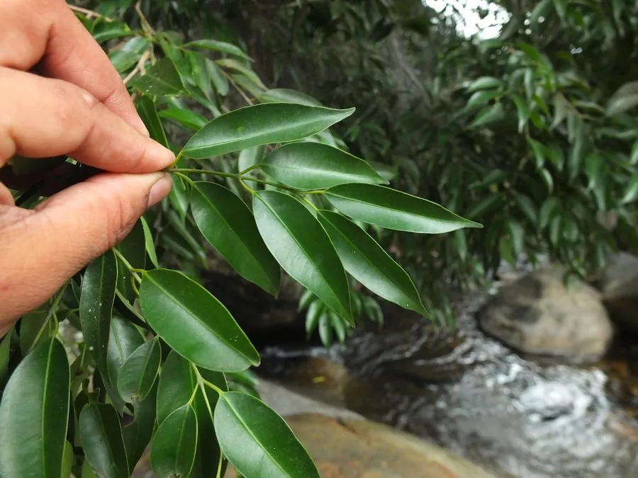

乔木 · 植物界
铁力木 Mesua ferrea

藤黄科常绿大乔木，木材极硬重、入水即沉，耐腐抗虫，是世界上最重的木材之一，中国云南南部有分布。
- 分类
- 门被子植物门纲木兰纲目金虎尾目科藤黄科属铁力木属
- 栖息环境
- 海拔 1000 米以下的热带季雨林、河谷与山坡，喜高温多湿
- 地理分布
- 中国云南南部、广西南部；印度、缅甸、泰国、越南等地
- 保护级别
- IUCN 无危（LC）；中国国家二级保护野生植物
物种志
铁力木为藤黄科铁力木属常绿大乔木，高 20–30 米，树皮灰褐色，富含树脂，小枝细长。叶片对生，硬革质，披针形至狭椭圆形，表面深绿有光泽，背面苍白，嫩叶呈粉红色，颇具观赏性。花大，白色至淡粉色，花瓣 4 枚，雄蕊多数，花心金黄，具芳香，花期 3–5 月；果实为蒴果，卵形，成熟时褐色、2–4 瓣开裂，内含 1–4 粒具棱的种子，果期 8–10 月。
铁力木原产印度、缅甸、泰国、越南及中国云南南部、广西南部，生于热带季雨林与河谷林中。它喜高温多湿、阳光充足，适宜深厚肥沃的酸性土壤，生长缓慢。木材极硬重，气干密度可达 1.1 克每立方厘米，入水即沉，耐腐抗虫，是制作高级家具、乐器、雕刻与军工用材的珍稀木材；种子可榨油，树皮与花入药。由于长期过度采伐，野生资源稀少，中国将其列为国家二级保护野生植物。
形态与习性
- 株高20–30 m，树皮富含树脂
- 花期3–5 月，花白色至淡粉色、芳香
- 果期8–10 月，蒴果木质、开裂
- 光照喜光，幼树可稍耐阴
- 水分喜湿润，忌干旱与积水
- 土壤深厚肥沃的酸性砖红壤
- 主要用途高级硬木家具、乐器、雕刻，种子榨油
趣味知识
- 铁力木木材气干密度可达 1.1 克每立方厘米，放入水中会下沉。
- 铁力木是热带地区最硬的木材之一，耐腐抗虫，可百年不坏。
- 铁力木的嫩叶呈粉红色，与深绿色老叶相衬，观赏性很强。
- 中国云南西双版纳的傣族村寨常用铁力木制作织机与家具。